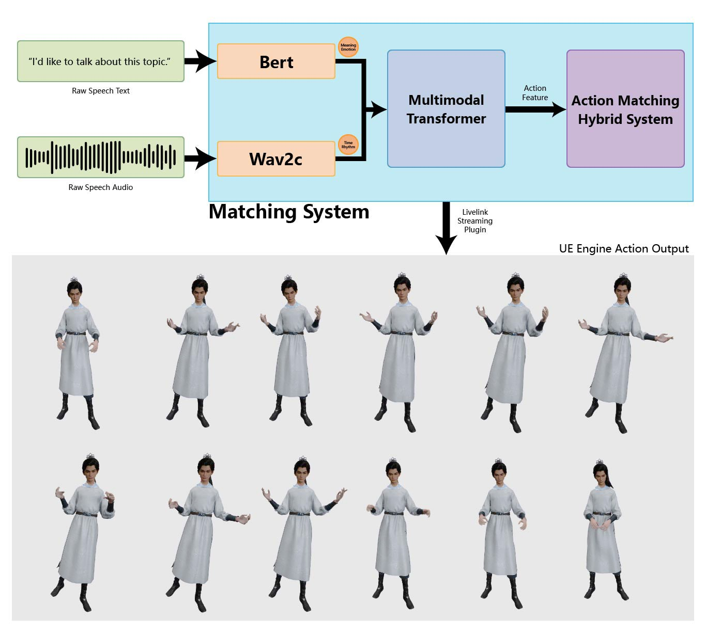
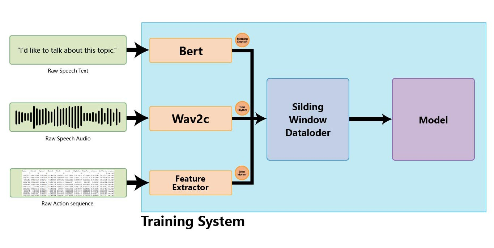

The objective metrics also highlight TRiMM’s strong performance, particularly in inference speed and motion diversity, setting a new benchmark.
Large Language Model (LLM)-driven digital humans have sparked a series of recent studies on co-speech gesture generation systems. However, existing approaches struggle with real-time synthesis and long-text comprehension. This paper introduces Transformer-Based Rich Motion Matching (TRiMM), a novel multi-modal framework for real-time 3D gesture generation.
Our method incorporates three modules: 1) a cross-modal attention mechanism to achieve precise temporal alignment between speech and gestures; 2) a long-context autoregressive model with a sliding window mechanism for effective sequence modeling; 3) a large-scale gesture matching system that constructs an atomic action library and enables real-time retrieval.
Additionally, we develop a lightweight pipeline implemented in the Unreal Engine for experimentation. Our approach achieves real-time inference at 120 fps and maintains a per-sentence latency of 0.15 seconds on consumer-grade GPUs (Geforce RTX3060).
Extensive subjective and objective evaluations on the ZEGGS, and BEAT datasets demonstrate that our model outperforms current state-of-the-art methods. TRiMM enhances the speed of co-speech gesture generation while ensuring gesture quality, enabling LLM-driven digital humans to respond to speech in real time and synthesize corresponding gestures.
In our work, we present a matching system that processes raw speech text through BERT to extract meaning and the corresponding audio through Wav2c to capture tone and rhythm. A multimodal transformer then fuses these features, and our hybrid system generates a final character action that is streamed as a real-time animation into the Unreal Engine.
The illustration of how to match motion
For our training system, we process three parallel data streams: BERT extracts meaning from raw text, Wav2c extracts tone and rhythm from raw audio, and a dedicated feature extractor processes the raw action sequence for its corresponding joint motion. These three feature sets are then synchronized by a sliding window dataloader to create the structured input batches used to train our final model.
The illustration of how to train.
1_wayne_0_101
1_wayne_0_103
1_wayne_0_104
1_wayne_0_107
1_wayne_0_109
001_Neutral_0_x_1
005_Neutral_4_x_1
015_Happy_4_x_1
017_Relaxed_1_x_1
020_Relaxed_4_x_1
The objective metrics also highlight TRiMM’s strong performance, particularly in inference speed and motion diversity, setting a new benchmark.
| Methods | Subject Evaluation Metric | Objective Evaluation Metric | ||||||
|---|---|---|---|---|---|---|---|---|
| Dataset | Model | Human likeness ↑ | Appropriateness ↑ | Style appropriateness ↑ | FGD ↓ (Feature space) |
Diversity ↑ | AITS ↓ | |
| ZEGGS | TRiMM (ours) | 0.85±1.00 | 1.11±0.66 | 0.67±0.60 | 58.32 | 12332.08 | 0.14 | |
| DSG | -0.98±1.01 | -0.93±0.88 | -0.24±1.13 | 50.45 | 3497.15 | 19.06 | ||
| QPGesture | 0.67±0.69 | 0.57±0.75 | 0.61±0.94 | 93.46 | 25605.58 | 193.07 | ||
| Diffsheg | -1.65±1.00 | -1.01±1.30 | -1.21±1.06 | 168.23 | 3242.18 | 0.32 | ||
| EMAGE | 0.24±0.85 | -0.29±0.77 | 0.13±0.87 | 69.18 | 29.95 | 2.45 | ||
| TRiMM MFA | 0.11±1.02 | -0.01±0.81 | 0.09±0.79 | 100.02 | 10606.22 | 0.14 | ||
| TRiMM MGA | 0.32±1.07 | 0.11±0.85 | -0.04±0.82 | 147.34 | 8025.75 | 0.14 | ||
| TRiMM TSAA | 0.07±0.67 | 0.17±0.79 | -0.13±0.87 | 269.96 | 11434.78 | 0.14 | ||
| BEAT | TRiMM (ours) | 1.08±0.94 | 1.28±0.81 | 1.11±0.60 | 2439.46 | 27852.14 | 0.19 | |
| Diffsheg | -1.05±1.04 | -0.28±1.32 | -0.44±0.81 | 745.51 | 5709.48 | 0.36 | ||
| QPGesture | 0.38±1.19 | 0.62±0.92 | 0.70±0.97 | 9785.40 | 2949.67 | 419.96 | ||
| EMAGE | 0.54±0.85 | 0.01±0.57 | 0.26±0.79 | 234896.87 | 61.17 | 6.37 | ||
| DSG | 0.06±0.96 | 0.09±1.20 | 0.03±0.96 | 3452980.75 | 3201.33 | 23.58 | ||
| TRiMM MGA | -0.40±1.04 | -0.61±0.92 | -0.64±0.65 | 8770.58 | 15477.05 | 0.19 | ||
| TRiMM TSAA | -0.45±0.79 | -0.48±0.72 | -0.32±1.15 | 1661280.78 | 27431.59 | 0.19 | ||
| TRiMM MFA | -0.31±0.58 | -0.65±0.73 | -0.75±0.91 | 2506167.78 | 18673.13286 | 0.19 | ||
In this study, we designed three user evaluation tasks targeting Human-likeness, appropriateness, and style-appropriateness. According to Nunnally’s seminal work, scale reliability tends to plateau around seven response categories, with marginal gains observed beyond eleven points. So we adopted a 7-point Likert scale to measure participants’ subjective preferences.
To complement the user evaluation tasks, we conducted a post-study questionnaire to collect participants’ subjective feedback. By aggregating and analyzing the responses, we obtained an overall view of participants’ impressions and preferences regarding the generated gestures.
UserStudy
TRiMM demonstrates significantly positive score differences across multiple dimensions (Human-likeness, Appropriateness, and Style-appropriateness) compared to various baseline models, indicating its superior performance in these metrics.
Statis_1
Statis_2
KS_1
KS_2